Wrestler profiles
Biographies, relationships, key matches, and source status.
Puroresu Project
I designed and built an interactive archive linking the wrestlers, promotions, eras, and traditions that shaped Japanese pro wrestling. The archive recorded 35,317 website views from July 1 to October 30, 2026.
Visit Puroresu Project
The problem
I was about ten when I started buying All Japan Pro Wrestling and FMW matches on VHS from U.S. tape shops and traders. I learned the history one match at a time.
For international fans, that history is scattered across articles, videos, and biographies, many available only in Japanese. A newcomer can find a match and still have no idea how the wrestlers are connected.
I built the archive to give newcomers a way in and longtime fans a way to follow those connections.
Design decisions
A newcomer might arrive without knowing a name to search for. A longtime fan might come looking for a particular match.
Information architecture
The Story introduces the eras and leads into Timeline. Fans who know what they want can go straight to a collection. Archive Trails offer another route. Pick a theme and follow its connections.
Open the section that interests you.
Enter through a curated historical theme.
Direct access from the header
An introduction across eras
Continues into TimelineChronology and documented moments
Profiles and career context
Organizations and their histories
Training, institutions, and influence
Match and game collections
Matches · GamesFour destinations in the navigation dropdown
Styles and wrestling traditions
Venue histories and geography
Mask archive and identities
Referees, announcers, and other voices
Choose a theme to see the sections it opens.
Muta MythologyThe Vault · Lineage · Masks · Timeline
The highlighted tiles show where the selected trail leads.
Content system
I generate the collections from shared records. Correcting a name, date, or relationship in one place carries the correction across the archive.
Maintain the record once
Biographies, relationships, key matches, and source status.
Across five eras, each with a compact documented record.
Across 17 promotions, connected to context and viewing guidance.
Signature moments, regional context, and map exploration.
Keep relationship labels specific: a tag partner or stablemate is not automatically a rival.
Use only the date precision supported by the sources, and distinguish a match date from its airdate.
Separate documented history from editorial interpretation and viewing guidance, with traceable sources behind factual claims.
The solution
Oversized, grainy photographs recall the Japanese wrestling magazines I grew up with.
From the homepage, the Tiger Mask trail connects matches in The Vault with wrestler profiles, lineage, and masks. A fan can start with a familiar face and follow a connection they didn’t know about.
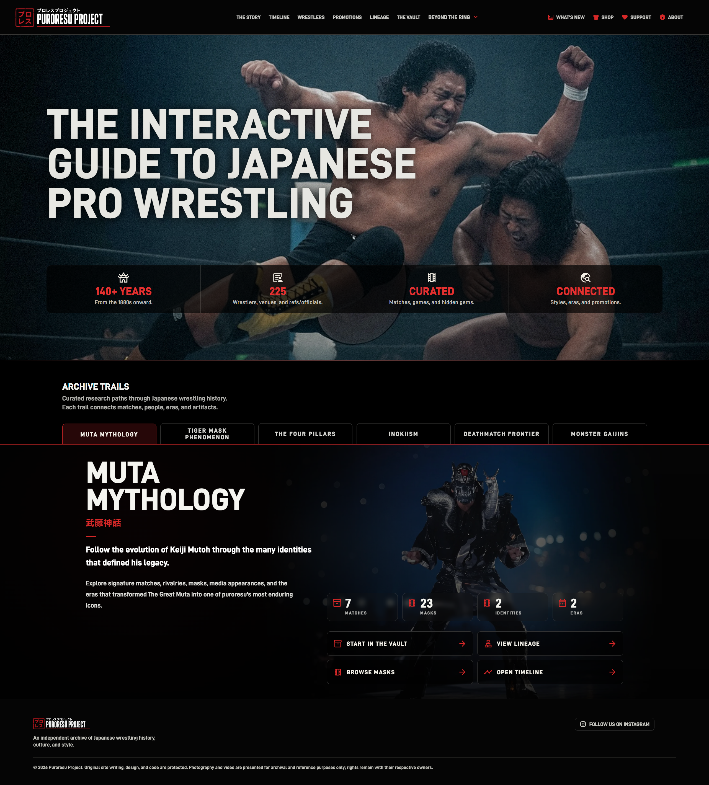
Homepage entry
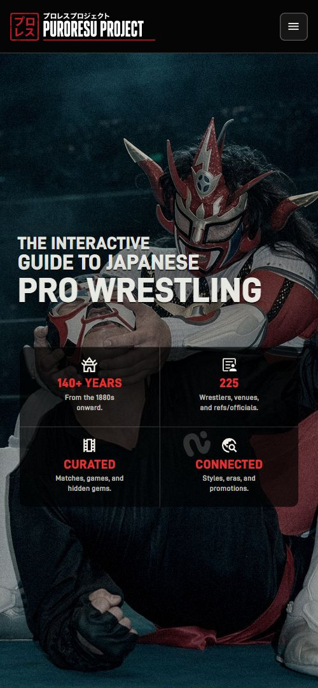
Archive Trails
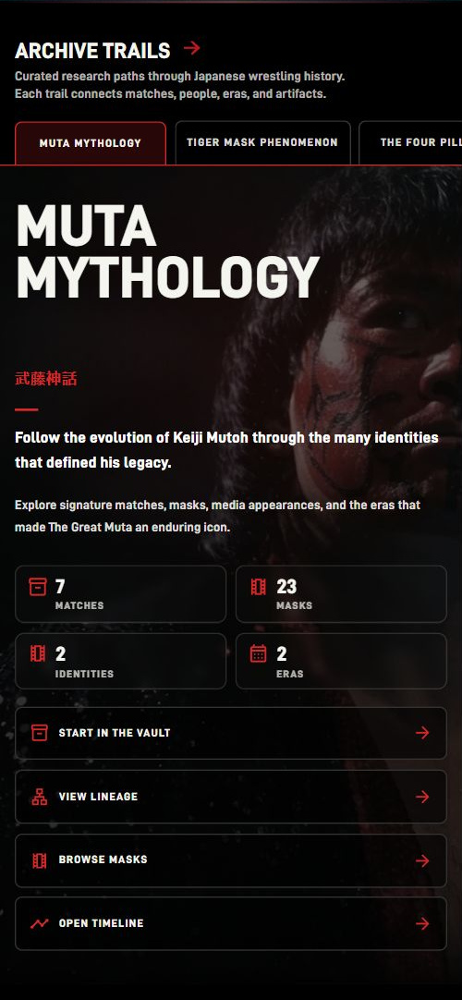
Deeper trail actions
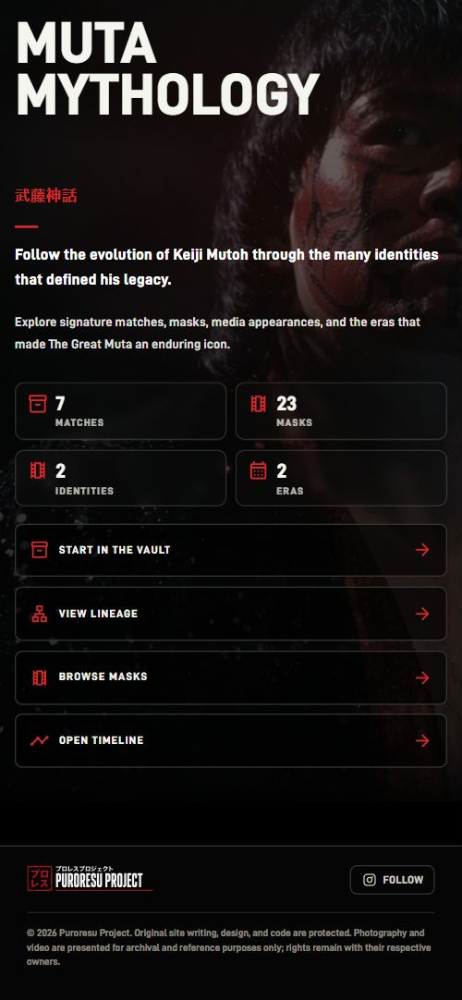
The Story
For a reader who wants the historical context first, The Story introduces the eras and leads directly into the Timeline.
Timeline
The Timeline places a match or turning point within its era, alongside the promotions and events that shaped it.
Wrestler archive
Readers can find a wrestler by name, promotion, era, gender, or rivalry. A profile opens beside the roster so they can follow an opponent without losing their place.
Each profile brings together the biography, titles, and key matches behind those connections.
Portrait system
Obscured faces and uneven framing made some wrestlers hard to recognize. For several from the 1950s and 1960s, clear portraits were scarce.
Roster portraits were the only photography work where I used AI. I trained the models to preserve each wrestler’s features and kept the framing consistent across the roster.
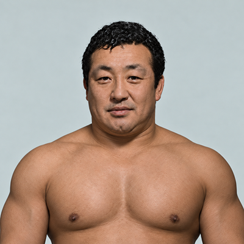

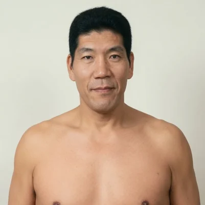
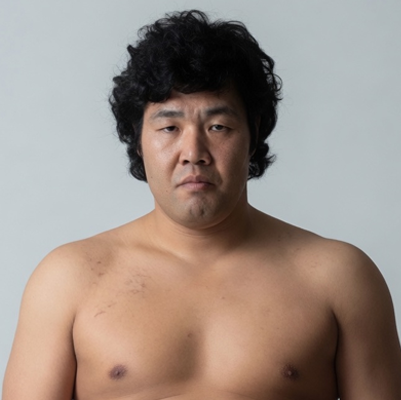
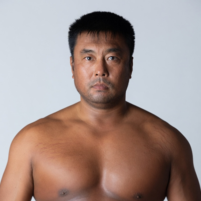
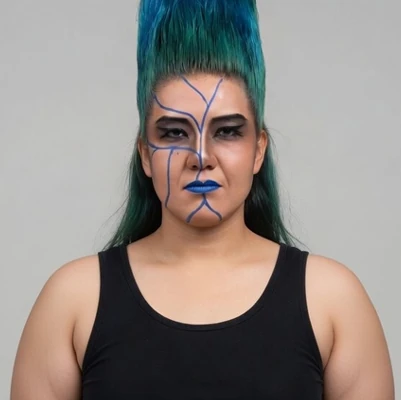
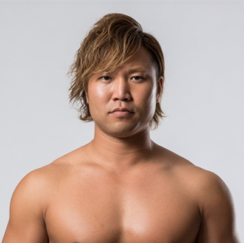
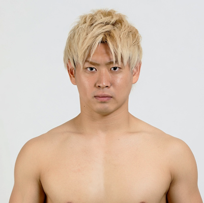
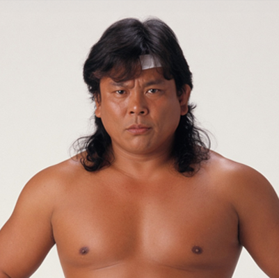
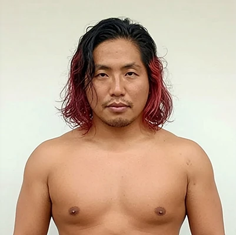
Connected data
A biography tells Rikidōzan’s story. Lineage shows who trained, influenced, or worked alongside a wrestler.
Selecting Tiger Mask brings his connections to Antonio Inoki and New Japan into focus while the surrounding network stays visible.
Color distinguishes types of relationships. Direction shows how influence moves across generations.
The Vault
On tape, I watched Misawa dethrone Tsuruta and Jushin Liger face Great Sasuke in the 1994 Super J-Cup. I wanted fans to experience that feeling of finding a match worth passing on.
I built The Vault as a room readers can explore, with tapes, posters, and games from my own collection alongside the match archive.
Venues
A match record gives the event a date. The Venues collection gives it a place, from the major arenas to regional halls.
Switching to the map keeps the same filters and shows the distances wrestlers traveled between stops.
Experience system
Search, filters, and detail panels work the same way across collections, so readers can follow a trail without learning new controls at every stop.
Design language
The visual language comes from ringside photography, VHS contrast, Japanese magazine type, and television graphics.
On near-black surfaces, white carries the story. Red marks the selected path, a date, or a turning point.
ARCHIVAL DARK / VISUAL SYSTEM


DISPLAY / CONDENSED / UPPERCASE
THE GOLDENCORE PALETTE
#070707#F2EFE7#BC1C23EDITORIAL EMPHASIS
CONSISTENT CARDS / ACROSS THE ARCHIVE
Shared framing, typography, and a clear path into each record.
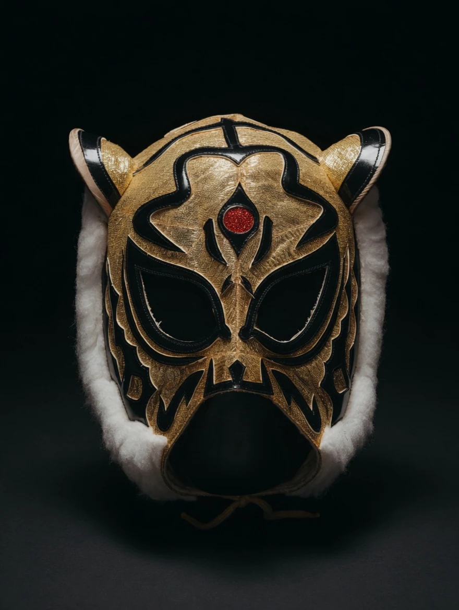
Tiger Mask I First Generation Tiger Mask Vintage Gold Black The First Generation Tiger Mask Vintage Gold Black worn by Tiger Mask uses a gold, black, white, and red palette across gold glitter, black leather trim, and white fur trim.Social system
For Instagram, I paired a ringside image with one story per carousel and carried over the archive’s type and red accents.


Results
Instagram performance
From August 1 to October 29, 2026, Instagram content reached an audience largely outside the account’s existing followers. Profile visits and bio link taps showed interest beyond the individual posts.
73.8% of views came from non-followers
Reported in Instagram Insights
Across Instagram content
Instagram also reported 5,400 net new followers, approximately 15,000 profile visits, and approximately 2,500 bio link taps during this period.
Website performance
From July 1 to October 30, 2026, Google Analytics recorded visits across Classic Matches, Wrestlers, The Vault, Lineage, and Timeline.
Also reported: 8,793 new users
Across archive and story pages
Per active user
Google Analytics attributed 4,347 sessions to Instagram-related sources during the July 1–October 30 period: 4,096 from ig / social, 245 from l.instagram.com / referral, 5 from instagram.com / referral, and 1 from ig / referral. Sessions and Instagram bio link taps are separate measures with different reporting periods.
Sources: Instagram Insights screenshots, August 1–October 29, 2026; Google Analytics Reports snapshot and Demographic details: Country export, July 1–October 30, 2026. Map created with Datawrapper; four users without country data are not plotted. Profile visits and bio link taps are rounded as displayed in Instagram Insights. Website views are summed across the exported page-title rows. These figures describe audience reach and activity during their respective reporting periods.
Validation
I checked for duplicate entries, broken references, and relationships that appeared in only one of two linked records.
I checked broken paths and responsive layouts across mobile, tablet, and desktop, including long filters and detail panels.
I reviewed touch targets, keyboard focus, reduced-motion behavior, and media-heavy pages as their interface states changed.
I add new records and recheck older links as more sources become available.
Retrospective
The hardest decisions were often about how much certainty the interface could imply. A clear line or a precise date can look authoritative even when the underlying history is incomplete.
Readers wrote to tell me what they’d discovered. One described following the archive into 1990s All Japan, the same era I first encountered on tape.
I cannot thank you enough for this project, I've just started watching Japanese wrestling the last 8 years and I was able to really dive into the peak era's of AJPW in the 90s and learn tons from this site.
You have built something incredible thats never been done before. I Hope this continues and brings more and more people to the puroresu world.
Thank you for this awesome cotent. Hopefully I can wrestle one day in Japan and make it onto your site, its incredible.